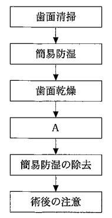
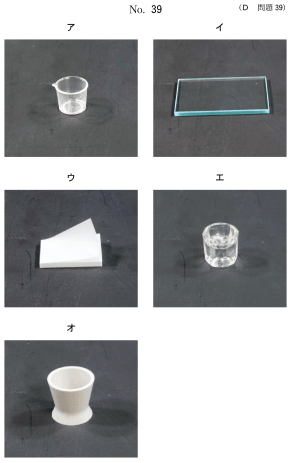
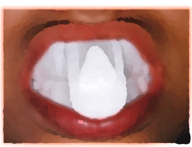

フッ化物歯面塗布は、高濃度（9,000 ppmF）のフッ化物溶液を歯面に直接塗布する方法である。歯科医師または歯科衛生士が歯科医院で行う。
| 種類 | 濃度 | pH | 特徴 |
|---|---|---|---|
| 2% NaF（フッ化ナトリウム） | 9,000 ppmF | 中性 | 最も一般的 |
| APF溶液 | 9,000 ppmF | 3.4〜3.6（酸性） | リン酸酸性フッ化物 |
| APFゲル | 9,000 ppmF | 3.4〜3.6（酸性） | カルボキシセルロース添加 |
| 8% SnF₂（フッ化第一スズ） | 19,400 ppmF | 酸性 | 着色の可能性あり |
| 対象 | 使用量 |
|---|---|
| 一般（1人1回） | 2mL（2g）以下 |
| 乳歯列未完成の乳児（歯ブラシ・ゲル法） | 1mL（1g） |
フッ化物歯面塗布には、綿球法（一般法）、歯ブラシ・ゲル法、イオン導入法、トレー法などがある。
| 塗布剤 | 頻度 |
|---|---|
| 2% NaF溶液 | 2週間の間に4回塗布（連続法） |
| APF溶液 | 2回/年 |
| 歯ブラシ・ゲル法（乳歯列期） | 4回/年 |
3歳の男児。齲蝕予防管理のため来院した。口腔診査後に齲蝕予防処置を行うこととした。器具の写真（別冊No.39）を別に示す。齲蝕予防処置の手順を図に示す。
Aで用いるのはどれか。1つ選べ。


【解説】フッ化物歯面塗布の手順は、①歯面清掃→②簡易防湿→③歯面乾燥→④薬剤塗布→⑤防湿除去→⑥保健指導である。手順Aは最初のステップである歯面清掃に該当し、ラバーカップ等を用いる。
8歳の男児。齲蝕予防処置を希望して来院した。フッ化物応用時の口腔内写真（別冊No.53）を別に示す。
使用溶液と濃度の組合せで適切なのはどれか。1つ選べ。

【解説】フッ化物歯面塗布には2% フッ化ナトリウム（NaF）が適切である。0.2% NaFはフッ化物洗口の濃度。0.5% SnF₂も洗口用。5% SnF₂は一般的でない。フッ化ジアンミン銀は齲蝕進行抑制剤であり、予防目的の歯面塗布には使用しない。